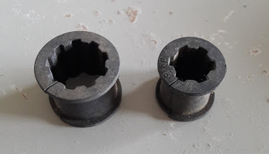

Buis-Isolatie
zaterdag 20 april 2019
22:25
Inleiding / Samenvatting
In deze notitie bekijken we hoeveel energieverlies verwarmingsbuizen veroorzaken en hoeveel energiebesparing isolatie van de verwarmingsbuizen kan opleveren. Besloten is om zowel proefondervindelijk als ook via theoretische berekeningen deze effecten in te schatten. Verder bekijken we of er een optimale buisisolatie te verzinnen is.
Er zijn 3 theoretische modellen gebruikt om een aantal resultaten in theorie en praktijk te vergelijken. Twee methode, die op geheel andere formules zijn gebaseerd, blijken exact dezelfde resultaten te geven, die bovendien ook nog aardig met de gemeten waarden overeenkomen. Het derde geteste model functioneert niet voor onze situaties. Het eerste model (platgeslagen radiator model) geniet de voorkeur, omdat dit model ook geschikt is om verticale buizen en buizen en isolatie met een andere emissiviteit te simuleren.
Er valt zo'n 100 m3 gas per jaar te besparen, afhankelijk van de hoeveelheid leiding en van de ingestelde keteltemperatuur.
De energie die ik kwijt raak bij mijn experimenten met de ventilatoren op de radiatoren is niet te verklaren met het verlies via de radiator leidingen, ongeveer 15 m leiding, een beetje geïsoleerd, dus raak ik daar zo'n 150 .. 250 Watt kwijt.
Meting van een all PIR box van zo'n 5 cm moet nog worden uitgevoerd en als dat zinvol is ga ik dat ook realiseren.
Bijbehorend programma: https://github.com/Stef-aap/Woning/blob/master/Heat_Convection.py
Aanleiding
Om een aantal redenen zijn we geïnteresseerd geraakt in de feiten en fabels rondom buis-isolatie.
Ad 2
De meeste fabrikanten en leveranciers specificeren alleen de lambda waarde, maar hier kom je bedrogen mee uit. Een van de weinige leveranciers die en de lambda-waarde en de Rd-waarde geven is gamma:
https://www.gamma.nl/assortiment/buisisolatie-voor-22-mm-buis-neutraal-grijs-2-meter/p/B586950
Rd staat "R-defined", de door de fabrikant gedefinieerde R-waarde, dus niet alleen op basis van lambda (= geleiding), maar die ook rekening houdt met straling en de vergrotting van het oppervlakte dat bij buizen een cruciale rol speelt.
Ad 3
Je zou geneigd zijn om er vanuit te gaan dat isolatie altijd het warmteverlies vermindert, echter bij buizen is dat niet zo vanzelfsprekend als het lijkt. Immers door isolatie verander je een aantal parameters, zoals
Als je op de achterkant van een bierviltje beide effecten probeert in te schatten, blijkt het toch moeilijker dan verwacht en lijkt het soms een dubbeltje op zijn kant.
<quote>
Ik ben niet helemaal duidelijk geweest denk ik.
Ik bedoel dat niet dat het belangrijk is dat de buisisolatie dun is, maar dat het beter is om dezelfde isolatie waarde te realiseren met dunnere isolatie.
Stel je hebt een buis met diameter 15mm en je isoleert deze met een 1cm dikke laag met Rc = 1, dan is het warmteverlies per strekkende meter het gemiddelde oppervlak van de isolatie maal de warmtegeleiding. Oftewel gem. diameter = 15mm + (2 x 10mm / 2) = 25mm. Het oppervlak is dan 25mm * pi = ~0,078m²
Het warmteverlies is dan 0,078m * 1 W/m²K = 0,078W/mK
Dezelfde berekening voor een Rc=1 met een isolatiedikte van 2cm:
15mm + (2 * 20mm / 2) = 35mm
35mm * pi * 1m = 0,12m
0,12m * 1W/m²K = 0,12W/mK
Dunnere isolatie met dezelfde isolatiewaarde is dus beter. Én meer isolatie met dezelfde warmtegeleiding is dus ook beter. Het kan allebei, of één van de twee, maar de kunst is dus om met zo min mogelijk geld de warmtegeleiding zoveel mogelijk te beperken.
Pasted from <https://gathering.tweakers.net/forum/list_messages/1491907>
<endquote>
Ook dit artikel: https://www.raeng.org.uk/publications/other/2-steam-pipe toont aan dat dunne isolatie het warmteverlies vergroot.
Proefopstelling
In principe wilde we de metingen uitvoeren aan horizontaal geplaatste buizen, en wel om twee redenen:
We hebben 2 buizen (met een doorsnede van 22 mm) genomen omdat we enerzijds het verschil van een geverfde en niet geverfde buis wilde bepalen en anderzijds omdat we willen onderzoeken of een totale omkasting van beide buizen (met PIR of iets soortgelijks) zinvol is.
Praktisch gezien is een echt horizontale buis niet zo handig omdat je dan moeilijk moet gaan doen om het water binnen te houden. Daarom hebben we gekozen om de buizen onder een hoek van 15 graden t.o.v. de horizontaal te plaatsen.
Verder zijn de stroom en spanningsmeter te zien, waardoor we exact het toegevoerde vermogen kunnen bepalen en een K-type thermokoppel meter, die kan meten met een resolutie van 0.1 Celsius. Het thermokoppel is ongeveer halverwege in de buis geplaatst.
Als verwarmingselement zijn 40 weerstandjes van 1 Ohm aaneen geregen, zoals op de foto rechts is te zien. De totale weerstand bedraagt daarmee 10 Ohm.
Met maximaal 25 Volt kunnen we hier dus iets meer dan 60 Watt in stoppen. Hoewel de weerstanden onder normale omstandigheden niet zoveel vermogen zouden kunnen verdragen, zullen ze het toch houden omdat de koeling door omringende water de temperatuur beneden de 100 graden Celsius zal houden.
Wel blijkt een ander probleem op te treden, er vinden namelijk allerlei elektrochemische processen plaats waardoor het metaal wegrot, zodat niet veel langer dan een dag gemeten kan worden alvorens de ketting helemaal uit elkaar begint te vallen (dus we hebben er een aantal moeten maken). | 
|
Effect van Witte Verf
In dit experiment vergelijken we een ongeverfde buis met een wit geschilderde buis.
Helaas gaf dit experiment niet de verwachte resultaten, vermoedelijk omdat we oude buizen hebben gebruikt die al jaren stonden te roesten in de schuur. Daarom hebben we hier de zaak wat genept, door i.p.v. de ongeschilderde buis een buis omkleed met aluminium keukenfolie te gebruiken. Mogelijk dat met een echte buis het effect kleiner is.
tweede meting geverfde buis |
|
|
|
|
|
|
|
|
| Tkamer | Twater | T-IR | V | I | W | dT | W/K |
Wit | 20 | 41.1 | 37.4 | 10.46 | 1.04 | 10.88 | 21.10 | 0.52 |
Wit | 19.5 | 48.8 | 44.3 | 12.81 | 1.27 | 16.27 | 29.30 | 0.56 |
Wit | 20 | 55.2 | 50.4 | 14.67 | 1.46 | 21.42 | 35.20 | 0.61 |
|
|
|
|
|
|
|
|
|
alu | 20 | 43.8 | 21.6 | 9.18 | 0.83 | 7.62 | 23.80 | 0.32 |
alu | 20 | 56.1 | 21.9 | 12.96 | 1.17 | 15.16 | 36.10 | 0.42 |
alu | 20 | 64.6 | 22 | 14.66 | 1.33 | 19.50 | 44.60 | 0.44 |
Pasted from <file:///C:\D\_Milieu\Buis_Isolatie.xlsx>
Tkamer = de ruimte temperatuur gemeten met een Brain Thermostaat (resolutie 0.5 Celsius)
Twater = de watertemperatuur gemeten met een K-type thermokoppel (resolutie 0.1 Celsius)
T-IR = de oppervlakte temperatuur gemeten met een IR-thermometer (resolutie 0.1. Celsius) Deze meter meet dus in principe alleen de IR-straling
V = spanning over de weerstanden
I = stroom door de weerstanden
W = berekend vermogen op basis van V * I
dT = Temperatuurverschil tussen water in de buis en de ruimte temperatuur
W/K = Berekend warmteverlies
Horizontaal staat de temperatuurverschil van het water in de buis t.o.v de ruimte temperatuur,
Vertikaal staat het verlies per graad temperatuurverschil tussen buis en omgeving
De bovenste 3 meetpunten zijn van de wit geverfde buis,
De onderste 3 meetpunten zijn van de buis omwikkeld met aluminium keukenfolie.
We zien dat het warmteverlies van de witte buis zo'n 75% hoger is dan van de aluminium buis.
Je kunt het effect ook direct zien als je de gemeten IR-temperatuur van de buitenkant vergelijkt.
Buis met 8mm isolatie
Zuinigheid troef, we hebben nog wat oude (deels vergane) isolatie gevonden, dus mogelijk dat de resultaten iets slechter zijn dan met verse isolatie.
Horizontaal staat de temperatuurverschil van het water in de buis t.o.v de ruimte temperatuur,
Vertikaal staat het verlies per graad temperatuurverschil tussen buis en omgeving
De bovenste 3 meetpunten zijn van de ongeïsoleerde buis,
De onderste 3 meetpunten zijn van de geïsoleerde buis.
We zien dat het warmteverlies bij 8mm isolatie nagenoeg halveert.
Je kunt het effect ook direct zien als je de gemeten IR-temperatuur van de buitenkant vergelijkt.
Simulatie Model 1
We hebben een rekenmodel waarmee we het gedrag van plaatradiatoren van verschillende type goed kunnen voorspellen.
Een horizontale buis (of een niet te lange enigszins schuin geplaatste buis) gaan we in eerste instantie omvormen tot een plaatradiator, door hem plat te drukken (zoals aangegeven in onderstaande tekening), waarmee het een type 10 radiator wordt met een lengte van 650mm en een hoogte van pi*22/2.
Omdat we in dit model de afgegeven convectie warmte en de afgeven stralingswarmte afzonderlijk vermeld krijgen, is de eerste vergelijking de witte met de aluminium buis,
Als we metingen vergelijken met de berekeningen, vinden we het volgende
tweede meting geverfde buis |
|
|
|
|
|
| dT | 20/30/40 | theorie | Convectie | Straling |
Wit | 20.00 | 10.3 | 10.6 | 5.7 | 4.9 |
Wit | 30.00 | 16.7 | 17.2 | 9.4 | 7.8 |
Wit | 40.00 | 24.3 | 24.2 | 13.2 | 11 |
|
|
|
|
|
|
alu | 20.00 | 6.4 | 6.2 | 5.7 | 0.5 |
alu | 30.00 | 12.6 | 10.2 | 9.4 | 0.8 |
alu | 40.00 | 17.5 | 14.3 | 13.2 | 1.1 |
dT = Temperatuur verschil tussen water in de buis en omgeving
20/30/40 = gemeten verlies [W] bij ongeveer die delta-T, geëxtrapoleerd naar exact die temperatuur
Theorie = berekende verlies [W]
Convectie = berekende verlies als gevolg van convectie [W]
Straling = berekende verlies als gevolg van straling [W]
Horizontaal de 6 metingen uit de tabel, (links de 3 Witte metingen, rechts de 3 aluminium metingen)
Vertikaal het verlies in Watt.
We zien dat voor de witte buis, de metingen en berekende waarde perfect (minder dan 5% verschil) met elkaar overeenkomen.
Bij de aluminium buizen zien we in de metingen een toch wat hoger warmteverlies (maximaal 22%) dan de berekende warmteverliezen.
Als we naar de foto hierboven kijken, zien we 2 effecten die het verschil zouden kunnen verklaren:
Of dit de daadwerkelijke verklaringen zijn is eigenlijk helemaal niet zo relevant. Bij dit soort metingen is een overeenkomst tussen meting en berekening van beter dan 20 % goed genoeg.
Conclusies:
Simulatie Model 2
Dit model is hier beschreven
http://excelcalculations.blogspot.com/2012/12/heat-loss-from-insulated-pipe.html
En je kunt er een werkend Excel file van downloaden.
De berekening die gebruikt is in deze methode is geheel anders dan de berekening van Model-1, terwijl de resultaten nagenoeg gelijk zijn.
Om de methoden te testen gebruiken we de metingen van de kale witte buis en de metingen met de 8 mm isolatie.
En omdat de resultaten behoorlijk goed waren, hebben we meteen maar Model-1 meegnomen.
In de linkerhelft de metingen en model-simulaties zonder isolatie en rechterheft de metingen en simulaties met isolatie.
We nemen het volgende waar
Model 2 is gebaseerd op onderstaande formules
|
|
In de onderste grafiek hierboven is deze simulatie vergeleken met het model van de platgeslagen buis als radiator. Hoewel hiervoor geheel verschillende formules zijn gebruikt, zijn de resultaten nagenoeg gelijk !!
Horizontaal is hier de dikte van de isolatie in mm weergegeven.
Vertikaal het warmteverlies bij deze isolatie dikte van beide modellen ( Twater=60, Tomgeving is 20 )
Simulatie Model 3
https://caos.library.ryerson.ca/index.php/ictea/article/view/32
In dit artikel wordt geanalyseerd hoe het warmteverlies van een horizontale ronde buis ontstaat en berekend kan worden. Het artikel geldt voor energie niveaus van 20 .. 500 W/m2. Aangezien wij maximaal 400 W/m2 in de (ongeïsoleerde) buis stoppen, zou bovenstaand artikel onze situatie perfect moeten kunnen verklaren. Een van de uitspraken in dit artikel is dat van het warmteverlies 27% ontstaat door straling en 73% door convectie. Omdat we het warmteverlies als gevolg van straling, zonder enige discussie, perfect kunnen berekenen, zouden we met dit artikel een goede manier hebben om het totale energieverlies uit te rekenen.
Voor de kale wit geverfde buis:
Dit is helaas bijna 2 keer de gemeten energie van 16.7 [W] .
Als we bovenstaande voor buis met isolatie gebruiken, klopt het wel redelijk
| Qtot=X*Qrad | 3.7 | 2.5 | 2 |
IsolatieDikte |
|
|
|
|
7mm |
| 8.5 | 7.8 | 7.4 |
8mm |
| 7.9 | 7.3 | 6.9 |
|
|
|
|
|
| gemeten verlies | 8.3 |
|
|
| Truimte | 20 |
|
|
| Twater | 50 |
|
|
| lambda | 0.042 |
|
|
| Diameter | 22 |
|
|
| Lengte | 0.65 |
|
|
| emissiviteit | 0.95 |
|
|
Mogelijk dat een vaste verhouding tussen straling en convectie niet juist is.
Conclusie:
Vergelijk met Olino
Dick Kleijer heeft op Olino soortgelijke metingen uitgevoerd. Hier proberen we na te gaan of zijn metingen en onze metingen/ berekeningen enigszins met elkaar in overeenstemming zijn.
Buislengte = 28 cm
Delta-T = 28 Celsius
Warmteverlies = 0.1413 W/Celsius
Materiaal roodkoper
Opstelling vertikaal
Helaas is er 1 groot probleem: hoe "mooi" is het oppervlakte van de koperen buis ? Immers gepolijst roodkoper heeft een emissiviteit van 0.05, terwijl geoxideerd roodkoper een emissiviteit van 0.78 heeft.
Tweede probleem (dat misschien wel irrelevant is) is dat de omgevingstemperatuur niet bekend is, laten we die daarom maar op 20 Celsius stellen.
We gaan de waarden naar elkaar proberen toe te rekenen door de emissiviteit te variëren. Als we dan een emissiviteit tussen de eerder genoemde grenswaarden vinden accepteren we dat onze theoretsche berekeningen ook overeenkomen met de berekeningen op Olino.
Nu blijkt dat als we een emissiviteit van 0.49 nemen, hetgeen zeer aannemelijk is, dat onze berekeningen en de metingen op Olino geheel overeenkomen.
emissiviteit = 0.49 |
|
|
|
|
|
0.1413 | dT | Olino | theorie | Convectie | Straling |
Vertikaal | 20 | 2.8 | 2.6 | 1.5 | 1.1 |
Vertikaal | 30 | 4.2 | 4.2 | 2.4 | 1.8 |
Vertikaal | 40 | 5.7 | 6.0 | 3.4 | 2.6 |
|
|
|
|
|
|
Horizontaal | 20 |
| 3.7 | 2.6 | 1.1 |
Horizontaal | 30 |
| 6.1 | 4.3 | 1.8 |
Horizontaal | 40 |
| 8.7 | 6.1 | 2.6 |
Uit deze tabel kunnen we het volgende afleiden:
Aluminium Folie
We zien dat het aanbrengen van aluminium folie aan de buitenkant van de isolatie nog een kleine verbetering geeft
tweede meting geverfde buis |
|
|
|
|
|
|
|
|
|
|
|
| Tkamer | Twater | T-IR | V | I | W | dT | W/K | dT | Wmooi | Model-1 |
iso-8+alu | 18 | 45.5 | 19.4 | 8.01 | 0.8 | 6.41 | 27.50 | 0.23 | 20.00 | 4.7 | 3.5 |
iso-8+alu | 18 | 52.4 | 19.4 | 9.24 | 0.92 | 8.50 | 34.40 | 0.25 | 30.00 | 7.4 | 5.6 |
iso-8+alu | 18 | 63.9 | 20 | 11.53 | 1.15 | 13.26 | 45.90 | 0.29 | 40.00 | 11.6 | 7.6 |
|
|
|
|
|
|
|
|
|
|
|
|
iso-8 | 18.5 | 41.4 | 26.7 | 8 | 0.8 | 6.40 | 22.90 | 0.28 | 20.00 | 5.6 | 4.5 |
iso-8 | 18.5 | 49.6 | 28.4 | 9.24 | 0.93 | 8.59 | 31.10 | 0.28 | 30.00 | 8.3 | 6.9 |
iso-8 | 18.5 | 61.1 | 31.5 | 11.53 | 1.16 | 13.37 | 42.60 | 0.31 | 40.00 | 12.6 | 9.1 |
Horizontaal staat de verschiltemperatuur tussen het water in de buis en de ruimte temperatuur.
Vertikaal staat het vermogen dat verloren wordt.
De bovenste rode en de bovenste blauwe curve zijn de curve zonder aluminium folie.
Als we kijken hoe ons model het doet, dan zien we een klein onderschatting, over de gehele linie, maar de percentuele verbetering wordt goed voorspeld.
Tijd om ons model eens los te laten op allerlei dikten van 0 .. 14 mm, en dan te bekijken wat de extra aluminium folie zal gaan doen, we krijgen dan onderstaande figuur
Horizontaal staat het simulatienummer,
de eerste 15 meetpunten zijn de de simulaties bij een water temperatuur van 40 graden Celsius,
De volgende 15 meetpunten bij watertemperatuur van 50 graden Celsius en ten slotte de 15 meetpunten bij 60 graden Celsius.
We zien bij alle watertemperaturen dat het effect van het aluminium folie geringer wordt naarmate de dikte van de isolatie toeneemt. Verder zien we dat het effect van aluminium folie überhaupt erg gering is (behalve bij zeer dunne isolatie).
De verklaring hiervoor is dat door het aanbrengen van de aluminium folie de straling weliswaar tot bijna nul wordt gereduceerd, maar dat de oppervlaktetemperatuur toeneemt en daardoor ook de convectie toeneemt, zoals te zien is in onderstaande grafiek.
Horizontaal weer het simulatienummer.
We zien hier duidelijk dat hoe dikker de isolatie is, hoe meer de oppervlakte temperatuur (van groen naar rood) zal stijgen als gevolg van het plaatsen van het aluminium folie.
Raming Besparing
Hier maak ik een inschatting van de besparing die ik zelf kan behalen.
Als voorbeeld gaan we er van uit dat de ketel 500 uur per jaar stookt.
Indien er totaal geen isolatie is en de ketel ingesteld staat op 80..90 graden, wordt er tijdens het stoken 3500 Watt verbruikt, oftewel een verbruik van 1750 kWh is ongeveer 175 m3 gas.
Met 9 mm isolatie (ik heb nu 8), wordt er zo'n 2400 Watt bespaard, gelijk aan een besparing van 120 m3 gas.
Verdere isolatie naar 5 cm PIR schuim bespaart noog eens 600 Watt oftewel 30 m3 gas.
Als de keteltemperatuur verlaagd wordt naar 50 graden Celsius, wordt de besparing aanzienlijk minder.
Isolatie | Ketel Temperatuur | Energie-0.1 | Energieverlies [W] | Verbruik [kWh] | Verbruik Gas [m3] |
geen | 80 | 2210 | 3540 | 1770 | 177 |
9 mm | 80 |
| 1140 | 590 | 59 |
5 cm PIR | 80 |
| 540 | 270 | 27 |
geen | 50 | 1140 | 1790 | 900 | 90 |
9 mm | 50 |
| 640 | 320 | 32 |
5 cm PIR | 50 |
| 300 | 150 | 15 |
Energie-0.1 is het energieveries van een kale buis, waarvan de emissiviteit 0.1 bedraagt.
Truimte = 10 Celsius (zolder is niet verwarmd)
# ***************************************************************
# simulatie eigen huis
# ***************************************************************
RBx = RadiatorBuis_Class ( Diameter=16, Lengte=60, Emissiviteit=0.95,
Truimte=10, Twater=60 )
ResultX = []
for Twater in [ 50, 60, 70, 80 ] :
RBx.Twater = Twater
for Dikte in [ 0, 9, 13, 50 ] :
Qx, Tx, Rx, Cx = RBx.Calc_Isolatie ( Isolatie_Dikte=Dikte, Lambda = 0.042 )
ResultX.append ( [ Twater, Dikte, Qx, Tx, Rx, Cx ])
print ()
DFx = pd.DataFrame(ResultX)
DFx.rename ( columns = { 0: "Twater[C]",
1: "Dikte[mm]",
2: "Q[W]",
3: "Topp[C]",
4: "Radiation",
5: "Convectie"
}, inplace=True )
axx = DFx.plot( y="Twater[C],Topp[C],Dikte[mm]".split(',') )
DFx.plot ( y="Q[W]".split(","), secondary_y=True, ax=axx )
Draw_Grids ( axx )
# ***************************************************************
Dikte=0[mm] Topp=50.000[C] Qrad=726.2[W] Qconv=1063.8[W] Qtot=1790.0[W] Qtot2=1790.0[W]
Dikte=9[mm] Topp=19.625[C] Qrad=316.9[W] Qconv=321.1[W] Qtot=638.0[W] Qtot2=638.1[W]
Dikte=13[mm] Topp=17.085[C] Qrad=284.3[W] Qconv=255.9[W] Qtot=540.2[W] Qtot2=540.0[W]
Dikte=50[mm] Topp=11.875[C] Qrad=202.2[W] Qconv=102.5[W] Qtot=304.7[W] Qtot2=304.7[W]
Dikte=0[mm] Topp=60.000[C] Qrad=955.5[W] Qconv=1385.7[W] Qtot=2341.2[W] Qtot2=2341.2[W]
Dikte=9[mm] Topp=21.775[C] Qrad=392.1[W] Qconv=410.8[W] Qtot=802.9[W] Qtot2=802.9[W]
Dikte=13[mm] Topp=18.665[C] Qrad=350.7[W] Qconv=327.7[W] Qtot=678.4[W] Qtot2=678.2[W]
Dikte=50[mm] Topp=12.305[C] Qrad=249.1[W] Qconv=132.4[W] Qtot=381.5[W] Qtot2=381.2[W]
Dikte=0[mm] Topp=70.000[C] Qrad=1206.5[W] Qconv=1717.1[W] Qtot=2923.6[W] Qtot2=2923.6[W]
Dikte=9[mm] Topp=23.875[C] Qrad=467.2[W] Qconv=502.0[W] Qtot=969.2[W] Qtot2=968.9[W]
Dikte=13[mm] Topp=20.205[C] Qrad=416.3[W] Qconv=400.4[W] Qtot=816.7[W] Qtot2=817.0[W]
Dikte=50[mm] Topp=12.725[C] Qrad=295.2[W] Qconv=162.9[W] Qtot=458.1[W] Qtot2=457.8[W]
Dikte=0[mm] Topp=80.000[C] Qrad=1480.4[W] Qconv=2055.8[W] Qtot=3536.2[W] Qtot2=3536.2[W]
Dikte=9[mm] Topp=25.925[C] Qrad=542.0[W] Qconv=593.8[W] Qtot=1135.8[W] Qtot2=1135.9[W]
Dikte=13[mm] Topp=21.715[C] Qrad=481.8[W] Qconv=474.1[W] Qtot=955.9[W] Qtot2=956.3[W]
Dikte=50[mm] Topp=13.135[C] Qrad=340.3[W] Qconv=193.8[W] Qtot=534.1[W] Qtot2=534.4[W]
Besparing is vele malen kleiner als de emissiviteit van de kale radiatorbuizen 0.1 is
Dikte=0[mm] Topp=50.000[C] Qrad=76.4[W] Qconv=1063.8[W] Qtot=1140.2[W] Qtot2=1140.2[W]
Dikte=9[mm] Topp=19.625[C] Qrad=316.9[W] Qconv=321.1[W] Qtot=638.0[W] Qtot2=638.1[W]
Dikte=13[mm] Topp=17.085[C] Qrad=284.3[W] Qconv=255.9[W] Qtot=540.2[W] Qtot2=540.0[W]
Dikte=50[mm] Topp=11.875[C] Qrad=202.2[W] Qconv=102.5[W] Qtot=304.7[W] Qtot2=304.7[W]
Dikte=0[mm] Topp=60.000[C] Qrad=100.5[W] Qconv=1385.7[W] Qtot=1486.2[W] Qtot2=1486.2[W]
Dikte=9[mm] Topp=21.775[C] Qrad=392.1[W] Qconv=410.8[W] Qtot=802.9[W] Qtot2=802.9[W]
Dikte=13[mm] Topp=18.665[C] Qrad=350.7[W] Qconv=327.7[W] Qtot=678.4[W] Qtot2=678.2[W]
Dikte=50[mm] Topp=12.305[C] Qrad=249.1[W] Qconv=132.4[W] Qtot=381.5[W] Qtot2=381.2[W]
Dikte=0[mm] Topp=70.000[C] Qrad=127.0[W] Qconv=1717.1[W] Qtot=1844.1[W] Qtot2=1844.1[W]
Dikte=9[mm] Topp=23.875[C] Qrad=467.2[W] Qconv=502.0[W] Qtot=969.2[W] Qtot2=968.9[W]
Dikte=13[mm] Topp=20.205[C] Qrad=416.3[W] Qconv=400.4[W] Qtot=816.7[W] Qtot2=817.0[W]
Dikte=50[mm] Topp=12.725[C] Qrad=295.2[W] Qconv=162.9[W] Qtot=458.1[W] Qtot2=457.8[W]
Dikte=0[mm] Topp=80.000[C] Qrad=155.8[W] Qconv=2055.8[W] Qtot=2211.6[W] Qtot2=2211.6[W]
Dikte=9[mm] Topp=25.925[C] Qrad=542.0[W] Qconv=593.8[W] Qtot=1135.8[W] Qtot2=1135.9[W]
Dikte=13[mm] Topp=21.715[C] Qrad=481.8[W] Qconv=474.1[W] Qtot=955.9[W] Qtot2=956.3[W]
Dikte=50[mm] Topp=13.135[C] Qrad=340.3[W] Qconv=193.8[W] Qtot=534.1[W] Qtot2=534.4[W]
PIR Omkasting
ToDo
Isolatiesoorten
De meest gebruikte isolatiebuizen zijn gemaakt van low density poly ethyleen (PE)
Er zijn echter beter materialen verkrijgbaar
PIR: https://www.buisisolatie.nl/home/368-pir-schaal-kaal-22-20-mm.html
Overige Links
Links die ik verder niet heb bestudeerd, maardie mogelijk interessant zouden kunnen zin:
Online calculator: https://thermaflex.com/nl/isolatie-calculator/verwarming
https://www.youtube.com/watch?v=EWSzp3CxVVs
https://www.degruyter.com/downloadpdf/j/jaes.2015.5.issue-2/jaes-2015-0018/jaes-2015-0018.pdf
Ruwe metingen
Tkamer = de ruimte temperatuur gemeten met een Brain Thermostaat (resolutie 0.5 Celsius)
Twater = de watertemperatuur gemeten met een K-type thermokoppel (resolutie 0.1 Celsius)
T-IR = de oppervlakte temperatuur gemeten met een IR-thermometer (resolutie 0.1. Celsius) Deze meter meet dus in principe alleen de IR-straling
V = spanning over de weerstanden
I = stroom door de weerstanden
W = berekend vermogen op basis van V * I
dT = Temperatuurverschil tussen water in de buis en de ruimte temperatuur
W/K = Berekend warmteverlies
Wmooi = energieverlies omgerekend naar de mooie delta-T waarden van 20/30/40
eerste meting witte buis
| Tkamer | Twater | T-IR | V | I | W | dT | W/K | Wmooi |
kaal | 19.5 | 39.7 | 37.6 | 10.47 | 1.05 | 10.99 | 20.20 | 0.54 | 10.9 |
kaal | 19.5 | 48.8 | 43.3 | 12.85 | 1.28 | 16.45 | 29.30 | 0.56 | 16.8 |
kaal | 19.5 | 58.3 | 55.1 | 14.66 | 1.55 | 22.72 | 38.80 | 0.59 | 23.4 |
|
|
|
|
|
|
|
|
|
|
iso-9 | 19 | 39.5 | 25.8 | 8.03 | 0.8 | 6.42 | 20.50 | 0.31 | 6.3 |
iso-9 | 19 | 48.8 | 28 | 9.25 | 0.92 | 8.51 | 29.80 | 0.29 | 8.6 |
iso-9 | 19.5 | 59 | 32 | 11.53 | 1.15 | 13.26 | 39.50 | 0.34 | 13.4 |
|
|
|
|
|
|
|
|
|
|
iso-9+alu | 19 | 42 | 22 | 8.03 | 0.8 | 6.42 | 23.00 | 0.28 | 5.6 |
iso-9+alu | 19 | 48.7 | 22.8 | 9.25 | 0.92 | 8.51 | 29.70 | 0.29 | 8.6 |
iso-9+alu | 19 | 61.3 | 25 | 11.53 | 1.15 | 13.26 | 42.30 | 0.31 | 12.5 |

tweede meting geverfde buis
| Tkamer | Twater | T-IR | V | I | W | dT | W/K | Wmooi |
kaal | 20 | 41.1 | 37.4 | 10.46 | 1.04 | 10.88 | 21.10 | 0.52 | 10.3 |
kaal | 19.5 | 48.8 | 44.3 | 12.81 | 1.27 | 16.27 | 29.30 | 0.56 | 16.7 |
kaal | 20 | 55.2 | 50.4 | 14.67 | 1.46 | 21.42 | 35.20 | 0.61 | 24.3 |
|
|
|
|
|
|
|
|
|
|
iso-9+alu | 18 | 45.5 | 19.4 | 8.01 | 0.8 | 6.41 | 27.50 | 0.23 | 4.7 |
iso-9+alu | 18 | 52.4 | 19.4 | 9.24 | 0.92 | 8.50 | 34.40 | 0.25 | 7.4 |
iso-9+alu | 18 | 63.9 | 20 | 11.53 | 1.15 | 13.26 | 45.90 | 0.29 | 11.6 |
|
|
|
|
|
|
|
|
|
|
iso-9 | 18.5 | 41.4 | 26.7 | 8 | 0.8 | 6.40 | 22.90 | 0.28 | 5.6 |
iso-9 | 18.5 | 49.6 | 28.4 | 9.24 | 0.93 | 8.59 | 31.10 | 0.28 | 8.3 |
iso-9 | 18.5 | 61.1 | 31.5 | 11.53 | 1.16 | 13.37 | 42.60 | 0.31 | 12.6 |
eerste meting aan niet geverfde buis
| Tkamer | Twater | T-IR | V | I | W | dT | W/K | Wmooi |
kaal | 20.5 | 40.5 | 33.6 | 9.5 | 0.95 | 9.03 | 20.00 | 0.45 | 9.0 |
kaal | 20.5 | 50.5 | 40.8 | 11.19 | 1.12 | 12.53 | 30.00 | 0.42 | 12.5 |
kaal | 20.5 | 60.6 | 46.6 | 14.74 | 1.48 | 21.82 | 40.10 | 0.54 | 21.8 |
|
|
|
|
|
|
|
|
|
|
iso-9 | 20 | 40.3 | 26.9 | 7.2 | 0.71 | 5.11 | 20.30 | 0.25 | 5.0 |
iso-9 | 20 | 50 | 29.6 | 10.09 | 1.01 | 10.19 | 30.00 | 0.34 | 10.2 |
iso-9 | 20 | 60.1 | 33.1 | 11.08 | 1.1 | 12.19 | 40.10 | 0.30 | 12.2 |
|
|
|
|
|
|
|
|
|
|
iso-9+alu | 19.5 | 39 | 21.4 | 6.8 | 0.67 | 4.56 | 19.50 | 0.23 | 4.7 |
iso-9+alu | 19.5 | 49.5 | 22.3 | 7.9 | 0.78 | 6.16 | 30.00 | 0.21 | 6.2 |
iso-9+alu | 19 | 59.5 | 20.6 | 10.2 | 1.02 | 10.40 | 40.50 | 0.26 | 10.3 |
|
|
|
|
|
|
|
|
|
|
alu | 20 | 40 | 22.3 | 8.9 | 0.88 | 7.83 | 20.00 | 0.39 | 7.8 |
alu | 20 | 50 | 23.7 | 10.87 | 1.08 | 11.74 | 30.00 | 0.39 | 11.7 |
alu | 20 | 60 | 22 | 14.5 | 1.45 | 21.03 | 40.00 | 0.53 | 21.0 |

tweede meting aan niet geverfde buis (zou wat beter moeten zijn dan de eerste meting
| Tkamer | Twater | T-IR | V | I | W | dT | W/K | Wmooi |
kaal | 19.5 | 39.3 | 31.8 | 9.19 | 0.91 | 8.36 | 19.80 | 0.42 | 8.4 |
kaal | 19.5 | 49.9 | 38.3 | 12.97 | 1.29 | 16.73 | 30.40 | 0.55 | 16.5 |
kaal | 19.5 | 58 | 45 | 14.66 | 1.39 | 20.38 | 38.50 | 0.53 | 21.2 |
|
|
|
|
|
|
|
|
|
|
iso-9 | 19.5 | 39.5 | 26.3 | 6.78 | 0.67 | 4.54 | 20.00 | 0.23 | 4.5 |
iso-9 | 19.5 | 50 | 29.4 | 8.84 | 0.88 | 7.78 | 30.50 | 0.26 | 7.7 |
iso-9 | 19.5 | 59.4 | 30.9 | 10.85 | 1.08 | 11.72 | 39.90 | 0.29 | 11.7 |
|
|
|
|
|
|
|
|
|
|
iso-9+alu | 18.5 | 39.5 | 10.7 | 6.77 | 0.67 | 4.54 | 21.00 | 0.22 | 4.3 |
iso-9+alu | 18.5 | 49.1 | 20.9 | 8.21 | 0.82 | 6.73 | 30.60 | 0.22 | 6.6 |
iso-9+alu | 19 | 59 | 21.9 | 9.99 | 0.99 | 9.89 | 40.00 | 0.25 | 9.9 |
|
|
|
|
|
|
|
|
|
|
alu | 20 | 43.8 | 21.6 | 9.18 | 0.83 | 7.62 | 23.80 | 0.32 | 6.4 |
alu | 20 | 56.1 | 21.9 | 12.96 | 1.17 | 15.16 | 36.10 | 0.42 | 12.6 |
alu | 20 | 64.6 | 22 | 14.66 | 1.33 | 19.50 | 44.60 | 0.44 | 17.5 |

Created with Microsoft Office OneNote 2007
One place for all your notes and information